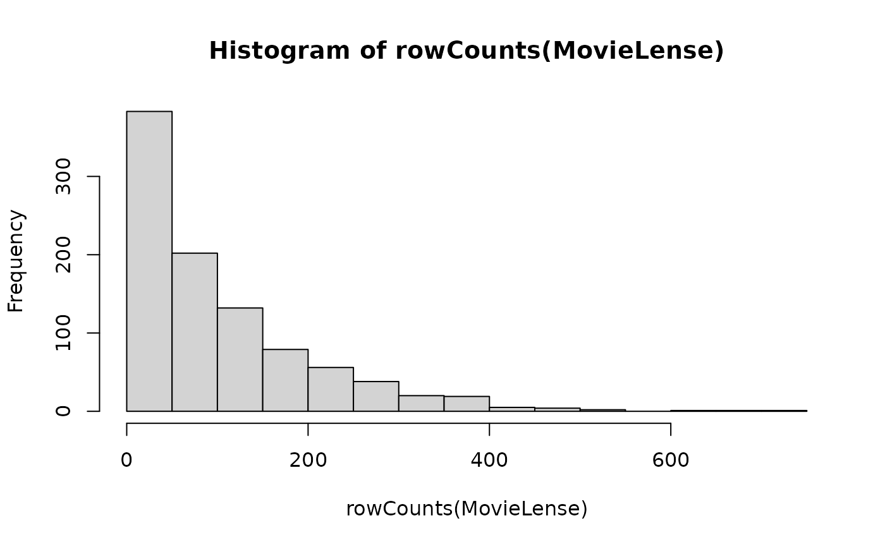
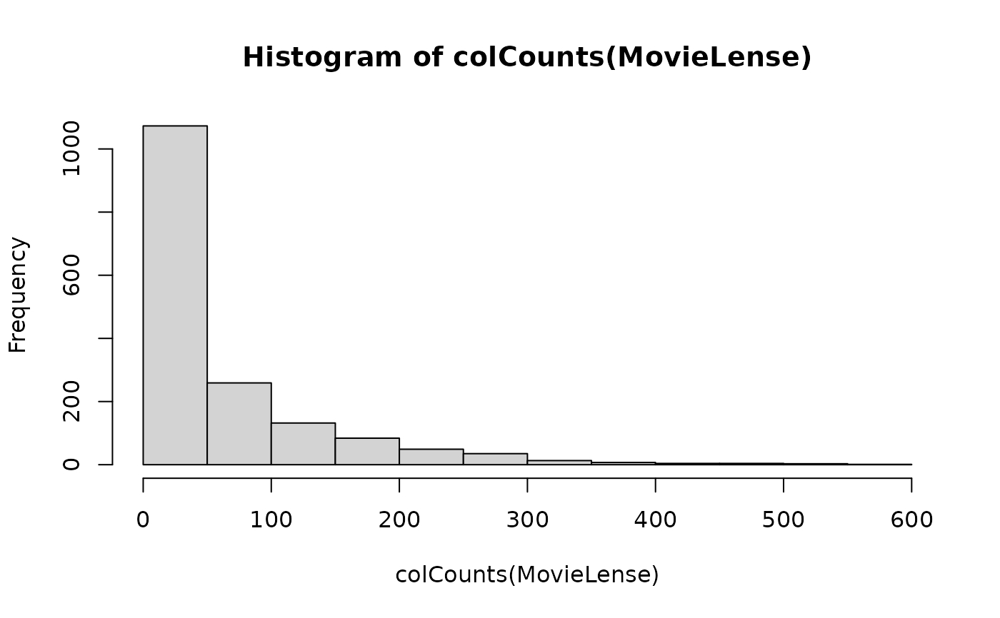

MovieLense Dataset (100k)
MovieLense.RdThe 100k MovieLense
ratings data set. The data was collected through the MovieLens web site
(movielens.umn.edu) during the seven-month period from September 19th,
1997 through April 22nd, 1998.
The data set contains about 100,000 ratings (1-5)
from 943 users on 1664 movies. Movie and user metadata is also provided in MovieLenseMeta and MovieLenseUser.
Usage
data(MovieLense)Format
The format of MovieLense is an object of class "realRatingMatrix"
The format of MovieLenseMeta is a data.frame with movie title, year, IMDb URL and indicator variables for 19 genres.
The format of MovieLenseUser is a data.frame with user age, sex, occupation and zip code.
Source
GroupLens Research, https://grouplens.org/datasets/movielens/
References
Herlocker, J., Konstan, J., Borchers, A., Riedl, J.. An Algorithmic Framework for Performing Collaborative Filtering. Proceedings of the 1999 Conference on Research and Development in Information Retrieval. Aug. 1999.
Examples
data(MovieLense)
MovieLense
#> 943 x 1664 rating matrix of class ‘realRatingMatrix’ with 99392 ratings.
## look at the first few ratings of the first user
head(as(MovieLense[1,], "list")[[1]])
#> Toy Story (1995)
#> 5
#> GoldenEye (1995)
#> 3
#> Four Rooms (1995)
#> 4
#> Get Shorty (1995)
#> 3
#> Copycat (1995)
#> 3
#> Shanghai Triad (Yao a yao yao dao waipo qiao) (1995)
#> 5
## visualize part of the matrix
image(MovieLense[1:100,1:100])
## number of ratings per user
hist(rowCounts(MovieLense))

## number of ratings per movie
hist(colCounts(MovieLense))

## mean rating (averaged over users)
mean(rowMeans(MovieLense))
#> [1] 3.587565
## available movie meta information
head(MovieLenseMeta)
#> title year
#> 1 Toy Story (1995) 1995
#> 2 GoldenEye (1995) 1995
#> 3 Four Rooms (1995) 1995
#> 4 Get Shorty (1995) 1995
#> 5 Copycat (1995) 1995
#> 6 Shanghai Triad (Yao a yao yao dao waipo qiao) (1995) 1995
#> url unknown Action
#> 1 http://us.imdb.com/M/title-exact?Toy%20Story%20(1995) 0 0
#> 2 http://us.imdb.com/M/title-exact?GoldenEye%20(1995) 0 1
#> 3 http://us.imdb.com/M/title-exact?Four%20Rooms%20(1995) 0 0
#> 4 http://us.imdb.com/M/title-exact?Get%20Shorty%20(1995) 0 1
#> 5 http://us.imdb.com/M/title-exact?Copycat%20(1995) 0 0
#> 6 http://us.imdb.com/Title?Yao+a+yao+yao+dao+waipo+qiao+(1995) 0 0
#> Adventure Animation Children's Comedy Crime Documentary Drama Fantasy
#> 1 0 1 1 1 0 0 0 0
#> 2 1 0 0 0 0 0 0 0
#> 3 0 0 0 0 0 0 0 0
#> 4 0 0 0 1 0 0 1 0
#> 5 0 0 0 0 1 0 1 0
#> 6 0 0 0 0 0 0 1 0
#> Film-Noir Horror Musical Mystery Romance Sci-Fi Thriller War Western
#> 1 0 0 0 0 0 0 0 0 0
#> 2 0 0 0 0 0 0 1 0 0
#> 3 0 0 0 0 0 0 1 0 0
#> 4 0 0 0 0 0 0 0 0 0
#> 5 0 0 0 0 0 0 1 0 0
#> 6 0 0 0 0 0 0 0 0 0
## available user meta information
head(MovieLenseUser)
#> id age sex occupation zipcode
#> 1 1 24 M technician 85711
#> 2 2 53 F other 94043
#> 3 3 23 M writer 32067
#> 4 4 24 M technician 43537
#> 5 5 33 F other 15213
#> 6 6 42 M executive 98101